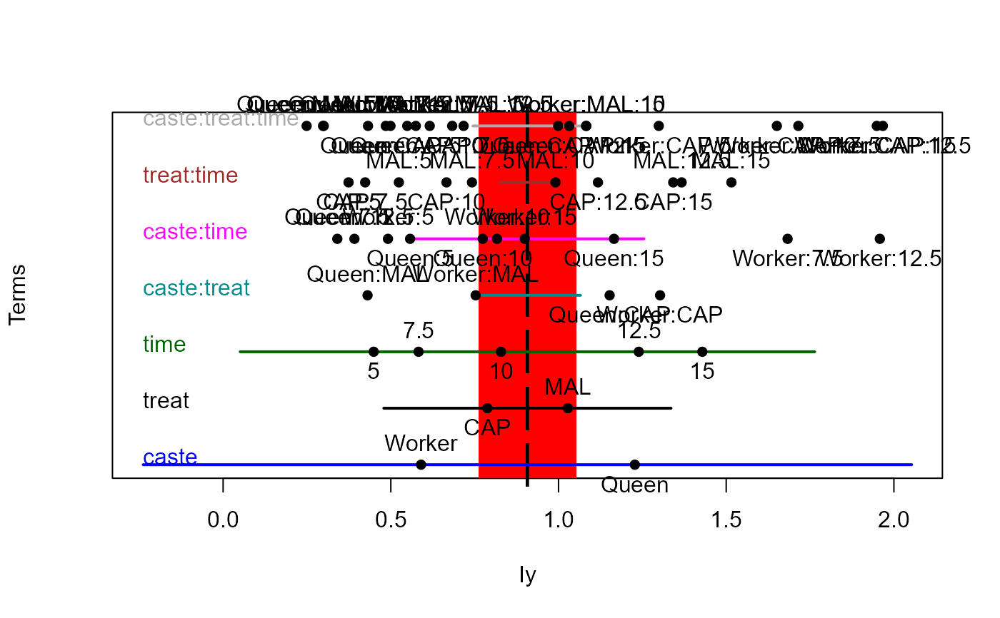

This function plots a 1-dimensional representation of the hypothesis (H) and error (E) sums-of-squares-and-products matrices for terms and linear hypotheses in a multivariate linear model.
Usage
heplot1d(mod, ...)
# S3 method for mlm
heplot1d(
mod,
terms,
hypotheses,
term.labels = TRUE,
hyp.labels = TRUE,
variables = 1,
error.ellipse = !add,
factor.means = !add,
grand.mean = !add,
remove.intercept = TRUE,
type = c("II", "III", "2", "3"),
idata = NULL,
idesign = NULL,
icontrasts = c("contr.sum", "contr.poly"),
imatrix = NULL,
iterm = NULL,
manova,
size = c("evidence", "effect.size"),
level = 0.68,
alpha = 0.05,
center.pch = "|",
col = getOption("heplot.colors", c("red", "blue", "black", "darkgreen", "darkcyan",
"magenta", "brown", "darkgray")),
lty = 2:1,
lwd = 1:2,
xlab,
main = "",
xlim,
axes = TRUE,
offset.axes = 0.1,
add = FALSE,
verbose = FALSE,
...
)Arguments
- mod
a model object of class
"mlm".- ...
arguments to pass down to
plot,text, andpoints.- terms
a logical value or character vector of terms in the model for which to plot hypothesis matrices; if missing or
TRUE, defaults to all terms; ifFALSE, no terms are plotted.- hypotheses
optional list of linear hypotheses for which to plot hypothesis matrices; hypotheses are specified as for the
linearHypothesisfunction in thecarpackage; the list elements can be named, in which case the names are used.- term.labels
logical value or character vector of names for the terms to be plotted. If
TRUE(the default) the names of the terms are used; ifFALSE, term labels are not plotted.- hyp.labels
logical value or character vector of names for the hypotheses to be plotted. If
TRUE(the default) the names of components of the list of hypotheses are used; ifFALSE, hypothesis labels are not plotted.- variables
indices or names of the two response variables to be plotted; defaults to
1:2.- error.ellipse
if
TRUE, plot the error ellipse; defaults toTRUE, if the argumentaddisFALSE(see below).- factor.means
logical value or character vector of names of factors for which the means are to be plotted, or
TRUEorFALSE; defaults toTRUE, if the argumentaddisFALSE(see below).- grand.mean
if
TRUE, plot the centroid for all of the data; defaults toTRUE, if the argumentaddisFALSE(see below).- remove.intercept
if
TRUE(the default), do not plot the ellipse for the intercept even if it is in the MANOVA table.- type
``type'' of sum-of-squares-and-products matrices to compute; one of
"II","III","2", or"3", where"II"is the default (and"2"is a synonym).- idata
an optional data frame giving a factor or factors defining the intra-subject model for multivariate repeated-measures data. See Details of
Anovafor an explanation of the intra-subject design and for further explanation of the other arguments relating to intra-subject factors.- idesign
a one-sided model formula using the ``data'' in idata and specifying the intra-subject design for repeated measure models.
- icontrasts
names of contrast-generating functions to be applied by default to factors and ordered factors, respectively, in the within-subject ``data''; the contrasts must produce an intra-subject model matrix in which different terms are orthogonal. The default is c("contr.sum", "contr.poly").
- imatrix
In lieu of
idataandidesign, you can specify the intra-subject design matrix directly viaimatrix, in the form of list of named elements. Each element gives the columns of the within-subject model matrix for an intra-subject term to be tested, and must have as many rows as there are responses; the columns of the within-subject model matrix for different terms must be mutually orthogonal.- iterm
For repeated measures designs, you must specify one intra-subject term (a character string) to select the SSPE (E) matrix used in the HE plot. Hypothesis terms plotted include the
itermeffect as well as all interactions ofitermwithterms.- manova
optional
Anova.mlmobject for the model; if absent a MANOVA is computed. Specifying the argument can therefore save computation in repeated calls.- size
how to scale the hypothesis ellipse relative to the error ellipse; if
"evidence", the default, the scaling is done so that a ``significant'' hypothesis ellipse extends outside of the error ellipse; if"effect.size", the hypothesis ellipse is on the same scale as the error ellipse.- level
equivalent coverage of ellipse for normally-distributed errors, defaults to
0.68.- alpha
significance level for Roy's greatest-root test statistic; if
size="evidence", then the hypothesis ellipse is scaled so that it just touches the error ellipse at the specified alpha level; a larger hypothesis ellipse therefore indicates statistical significance; defaults to0.05.- center.pch
character to use in plotting the centroid of the data; defaults to
"|".- col
a color or vector of colors to use in plotting ellipses; the first color is used for the error ellipse; the remaining colors --- recycled as necessary --- are used for the hypothesis ellipses. A single color can be given, in which case it is used for all ellipses. For convenience, the default colors for all heplots produced in a given session can be changed by assigning a color vector via
options(heplot.colors =c(...). Otherwise, the default colors arec("red", "blue", "black", "darkgreen", "darkcyan", "magenta", "brown", "darkgray").- lty
vector of line types to use for plotting the ellipses; the first is used for the error ellipse, the rest --- possibly recycled --- for the hypothesis ellipses; a single line type can be given. Defaults to
2:1.- lwd
vector of line widths to use for plotting the ellipses; the first is used for the error ellipse, the rest --- possibly recycled --- for the hypothesis ellipses; a single line width can be given. Defaults to
1:2.- xlab
x-axis label; defaults to name of the x variable.
- main
main plot label; defaults to
"".- xlim
x-axis limits; if absent, will be computed from the data.
- axes
Whether to draw the x, y axes; defaults to
TRUE- offset.axes
proportion to extend the axes in each direction if computed from the data; optional.
- add
if
TRUE, add to the current plot; the default isFALSE. IfTRUE, the error ellipse is not plotted.- verbose
if
TRUE, print the MANOVA table and details of hypothesis tests; the default isFALSE.
Value
The function invisibly returns an object of class "heplot1d",
with coordinates for the various hypothesis ellipses and the error ellipse,
and the limits of the horizontal and vertical axes. (No methods for
manipulating these objects are currently available.)
The components are:
- H
ranges for the hypothesis terms
- E
range for E
- xlim
x-axis limits
Details
In particular, for a given response, the 1-D representations of H and E matrices correspond to line segments. The E ``ellipse'' is shown as a filled rectangle whose width equals the mean squared error for that response. The H ``ellipse'' for each model term is shown as a line segment whose length represents either the size of the effect or the evidence for that effect.
This version is an initial sketch. Details of the implementation are subject to change.
See also
Anova, linearHypothesis for
hypothesis tests in mlms
Examples
## Plastics data
plastic.mod <- lm(cbind(tear, gloss, opacity) ~ rate*additive, data=Plastic)
heplot1d(plastic.mod, col=c("pink","blue"))
heplot1d(plastic.mod, col=c("pink","blue"),variables=2)
heplot1d(plastic.mod, col=c("pink","blue"),variables=3)
## Bees data
bees.mod <- lm(cbind(Iz,Iy) ~ caste*treat*time, data=Bees)
heplot1d(bees.mod)
heplot1d(bees.mod, variables=2)
